Hồi quy lồi và giới hạn của tối ưu tất định
Cơ sở toán học cho AI
Bài 05
Trường Đại học Công nghệ
Đại học Quốc gia Hà Nội
Sau bài này, người học có thể:
Tài liệu đọc trước: Goodfellow, Bengio và Courville (2016), §5.2; Boyd và Vandenberghe (2004), §9.1–9.3.
Giả thiết: mô hình tuyến tính $x^Tw,$ $x\in\mathbb R^d;$ $n$ mẫu, mất mát lồi $\ell_i;$ $F(w)=\frac1n\sum_i\ell_i(w).$
Nhắc lại: Bài 01–04 giả thiết $F$ lồi, trơn, có cực tiểu $w^*;$ khi đó hạ gradient, Newton hội tụ.
Nhu cầu: khi $d$ tăng so với $n,$ xác định cực tiểu của $F$ có tồn tại và duy nhất không.
Xác định thêm sai số trên dữ liệu mới và số phép tính.
Khi $n$ và $d$ lớn, khung của Bài 01–04 cần được kiểm tra lại vì hai lý do:
| Ký hiệu | Nghĩa |
|---|---|
| $(u_i,y_i),$ $i\le n$ | đầu vào thô $u_i$ gồm $d_0$ biến; nhãn thực hoặc $\pm1$ |
| ${x_i=\varphi(u_i)\in\mathbb R^d}$ | vector đặc trưng, tọa độ đầu bằng $1$ |
| $X\in\mathbb R^{n\times d},$ $y\in\mathbb R^n$ | ma trận thiết kế (hàng $i$ là $x_i^T$), vector nhãn |
| $w\in\mathbb R^d$ | tham số, hệ số chặn nằm trong $w$ |
| $L,$ $\mu,$ $\kappa$ | Nhắc lại: $\mu I\preceq\nabla^2F\preceq LI,$ tức $\mu\lVert v\rVert^2\le v^T\nabla^2F\,v\le L\lVert v\rVert^2;$ $L$ hằng số trơn, $\mu$ hằng số lồi mạnh, $\kappa=L/\mu$ số điều kiện |
Muốn xác định sai số ngoài mẫu, tính duy nhất và độ nhạy của nghiệm khi $d$ tăng so với $n.$
Quá khớp · tập xác thực · chế độ nội suy · số điều kiện · chính quy hóa
Nhu cầu: chọn $d$ cho năm mẫu khi $d$ có thể vượt $n=5.$ Cần sai số tại điểm mới, tính duy nhất, độ nhạy của nghiệm.
| $u_i$ | $-1$ | $-\tfrac12$ | $0$ | $\tfrac12$ | $1$ |
|---|---|---|---|---|---|
| $y_i$ | $-0{,}9$ | $-0{,}7$ | $0{,}2$ | $0{,}4$ | $1{,}0$ |
Đặc trưng đa thức $x=(1,u,\dots,u^{d-1})\in\mathbb R^d;$ tăng $d$ là thêm một cột vào $X.$
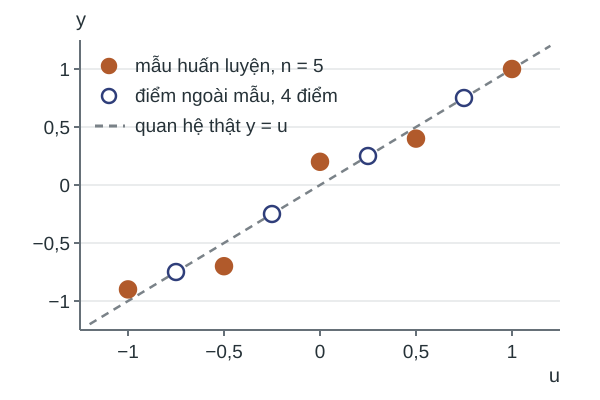
Nhắc lại: $F(w)=\frac1{2n}\lVert Xw-y\rVert^2$ có $\nabla^2F=\frac1nX^TX.$
Phương trình chuẩn $X^TXw=X^Ty$ luôn có nghiệm; nghiệm duy nhất khi và chỉ khi $\operatorname{rank}X=d$ (Mệnh đề 01.6).
Phương trình chuẩn cho $w$ ở từng $d;$ Hessian cho $L,$ $\mu$ của $F.$
Ví dụ ($d=2$). Vì $\sum_iu_i=0$ và $\sum_iu_i^2=\tfrac52\text{:}$
Sai số bình phương trung bình (MSE) huấn luyện $\frac1n\lVert Xw-y\rVert^2$ tại nghiệm của phương trình chuẩn:
| $d$ | $1$ | $2$ | $3$ | $4$ | $5$ |
|---|---|---|---|---|---|
| MSE | $0{,}5$ | $0{,}0198$ | $0{,}0197$ | $0{,}0179$ | $0$ |
Tập mô hình lồng nhau, nên sai số huấn luyện không tăng theo $d.$
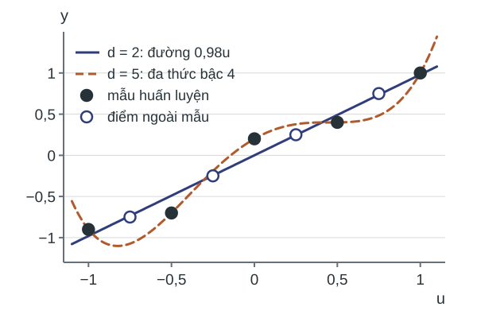
| $d$ | $1$ | $2$ | $3$ | $4$ | $5$ |
|---|---|---|---|---|---|
| MSE ngoài mẫu | $0{,}3125$ | $0{,}000125$ | $0{,}000205$ | $0{,}00107$ | $0{,}0487$ |
Bốn điểm ngoài mẫu $u=\pm\tfrac14,\pm\tfrac34,$ nhãn đúng $y=u,$ không nhiễu.
Cực tiểu chính xác ở $d=5$ có sai số ngoài mẫu gấp $389$ lần ở $d=2.$
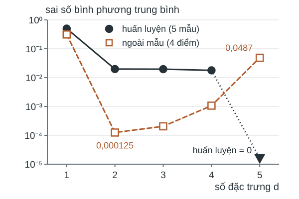
Nhắc lại: quá khớp (overfitting) ở Bài 00; rủi ro thực nghiệm $F(w)=\frac1n\sum_i\ell(w;u_i,y_i).$
Định nghĩa. Mẫu mới cùng phân phối $P$ với mẫu huấn luyện; rủi ro kỳ vọng là
Theo cặp $F,$ $R,$ quá khớp là trạng thái $F(w)$ nhỏ, $R(w)-F(w)$ lớn.
Ý nghĩa: nói chung $\arg\min F\ne\arg\min R.$
Định nghĩa. Tập xác thực (validation set) là mẫu tách riêng khỏi tập huấn luyện, dùng để chọn $d,$ $\lambda,$ bước dừng.
Tập kiểm thử (test set) là mẫu không tham gia lựa chọn nào, dùng để báo cáo ước lượng của $R.$
Nhắc lại: với $w$ cố định, mất mát trung bình trên mẫu độc lập ước lượng không chệch $R(w)$ (Định lý 05c.52).
Nhu cầu: giải thích MSE huấn luyện bằng $0$ tại $d=5;$ xác định tính duy nhất khi ${d\ge n}.$
Với $d=n=5\text{:}$ năm phương trình, năm ẩn; $X$ Vandermonde, nút phân biệt, nên khả nghịch.
$w=X^{-1}y$ thỏa $Xw=y,$ nên $F(w)=0\text{:}$
Kiểm tra tại $u=1$: tổng các hệ số bằng $1=y_5.$
Diễn giải: hệ số $u^4=\tfrac53$ trong khi quan hệ thật là $y=u;$ nghiệm khớp cả nhiễu.
Mệnh đề 1. Giả thiết: $X\in\mathbb R^{n\times d},$ $\operatorname{rank}X=n,$ nên $d\ge n.$
Kết luận: với mọi $y\in\mathbb R^n,$ $\min F=0;$ tập nghiệm là $\{w_0+v:\ v\in\ker X\}$ với $Xw_0=y,$ và $\dim\ker X=d-n.$
Chứng minh. Ảnh của $X$ có chiều $n$ nên bằng $\mathbb R^n;$ do đó có $w_0$ với $Xw_0=y.$
$Xw=y\iff w-w_0\in\ker X;$ định lý hạng–số chiều $(\dim\ker X=d-\operatorname{rank}X)$ cho $\dim\ker X=d-n.$
Năm mẫu, $d=6.$ Vector $z=(0,\tfrac14,0,-\tfrac54,0,1)$ là hệ số của $u(u^2-1)(u^2-\tfrac14).$
Đa thức này bằng $0$ tại năm nút, nên $Xz=0.$
$w_{\rm mn}$: nghiệm chuẩn nhỏ nhất (minimum-norm solution). Tính MSE của $w_{\rm mn}+tz\text{:}$
| $w_{\rm mn}+tz$ | $t=-5$ | $t=0$ | $t=5$ |
|---|---|---|---|
| MSE huấn luyện | $0$ | $0$ | $0$ |
| MSE xác thực | $0{,}2244$ | $0{,}0492$ | $0{,}1852$ |
Kết luận: khi $d>n,$ chọn nghiệm cần tiêu chí ngoài dữ liệu huấn luyện.
Nhu cầu: khi $d\le n$ nghiệm duy nhất nhưng có thể nhạy.
Xác định vì sao nghiệm $d=5$ lệch xa quan hệ thật dù nhiễu nhỏ.
Nhãn $y=u+\varepsilon,$ $\lVert\varepsilon\rVert=0{,}316;$ hệ số thật $w^\circ=(0,1,0,\dots).$
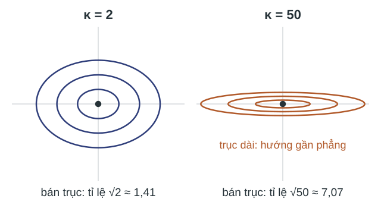
Trực quan. $d>n\text{:}$ $\ker X$ là hướng phẳng; $d\le n\text{:}$ có thể có hướng gần phẳng, đường mức dẹt.
| $d$ | $1$ | $2$ | $3$ | $4$ | $5$ | $\ge6$ |
|---|---|---|---|---|---|---|
| $\kappa(X^TX)$ | $1$ | $2$ | $9{,}50$ | $50{,}5$ | $553{,}7$ | $\infty$ |
Định nghĩa. Với $A$ đối xứng nửa xác định dương có trị riêng lớn nhất $\lambda_{\max}(A),$ nhỏ nhất $\lambda_{\min}(A)\text{:}$ $\kappa(A)=\lambda_{\max}(A)/\lambda_{\min}(A);$ quy ước $\kappa=\infty$ khi $\lambda_{\min}=0.$
Với $F=\frac1{2n}\lVert Xw-y\rVert^2\text{:}$ $L=\frac{\lambda_{\max}(X^TX)}n,$ $\mu=\frac{\lambda_{\min}(X^TX)}n,$ nên $\kappa_F=L/\mu=\kappa(X^TX).$
Nhận xét (độ nhạy). Khi $\operatorname{rank}X=d\text{:}$
Nhận xét (chiều tăng). Theo định lý xen kẽ Cauchy, $\kappa(X^TX)$ không giảm theo $d.$
Nhu cầu: nghiệm duy nhất và $\kappa$ hữu hạn khi $d\ge n;$ chọn mức khớp bằng tập xác thực.
Cực tiểu hóa $F+\frac\lambda2\lVert w\rVert^2\text{:}$
Nhắc lại: với $\lambda>0,$ nghiệm duy nhất với mọi $d$ (Mệnh đề 02.21(c)).
Cột $\kappa$: số điều kiện của $X^TX+n\lambda I;$ mọi trị riêng tăng thêm $n\lambda,$ nên $\kappa$ hữu hạn.
| $d=5$ | huấn luyện | xác thực | $\kappa$ |
|---|---|---|---|
| $\lambda=0{,}1$ | $0{,}0349$ | $0{,}0189$ | $16{,}3$ |
| $\lambda=0{,}01$ | $0{,}0123$ | $0{,}00261$ | $123{,}2$ |
| $\lambda=0{,}001$ | $0{,}00121$ | $0{,}0264$ | $409{,}7$ |
| $\lambda=0$ | $0$ | $0{,}0487$ | $553{,}7$ |
Chọn $\lambda=0{,}01\text{:}$ sai số xác thực nhỏ nhất.
Câu hỏi:
Năm mẫu $u=(-1,-\tfrac12,0,\tfrac12,1),$ $y=(-0{,}9;\ -0{,}7;\ 0{,}2;\ 0{,}4;\ 1),$ đặc trưng $(1,u,\dots,u^{d-1}).$
Lời giải:
Nhắc lại: bình phương nhỏ nhất luôn có nghiệm (Mệnh đề 01.6); mất mát logistic thì có thể không.
Muốn xác định khi nào mất mát logistic có cực tiểu lúc $d$ tăng tới $n,$ và $\kappa$ của mục tiêu có chính quy hóa.
Tách được tuyến tính · không tồn tại cực tiểu · chính quy hóa · lồi mạnh · số điều kiện
Nhu cầu: xác định sự tồn tại cực tiểu của mất mát logistic khi $d$ tăng.
Khi không có, sửa mục tiêu và tính $\kappa.$
Dữ liệu: $u=(-1,0,1),$ $y=(-1,+1,-1).$
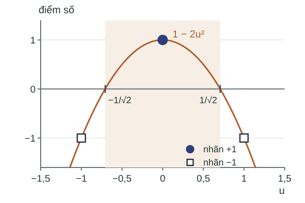
Nhắc lại: (Bài 01) biên có dấu (signed margin, còn gọi là lề có dấu) $m_i(w)=y_ix_i^Tw;$ sigmoid $\sigma(z)=\frac1{1+e^{-z}}\text{:}$
Với mọi $w,$ $F(w)>0;$ $F(0)=\log2;$ Hessian:
$F$ lồi; $S_{ii}\to0$ khi $\lvert m_i\rvert\to\infty,$ nên không có $\mu>0$ chung cho $F.$
Đặc trưng $(1,u,u^2)$: mọi biên $m_i(\bar w)=1,$ nên $F(t\bar w)=\log(1+e^{-t})\text{:}$
| $t$ | $0$ | $1$ | $5$ | $10$ |
|---|---|---|---|---|
| $F$ | $0{,}6931$ | $0{,}3133$ | $0{,}00672$ | ${4{,}5\cdot10^{-5}}$ |
$F$ giảm về $0$ dọc tia, không đạt $0.$
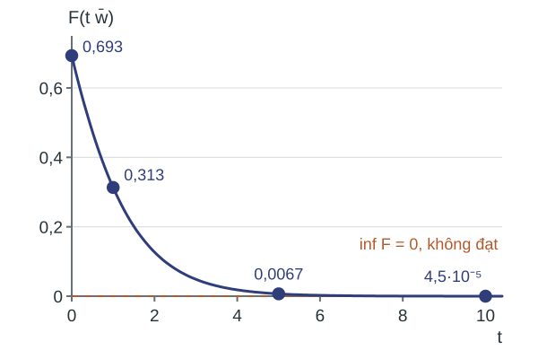
Nhắc lại: (Bài 01) dữ liệu $\{(x_i,y_i)\}_{i=1}^n,$ $y_i\in\{-1,+1\},$ tách được tuyến tính (linearly separable) nếu có $\bar w$ với $m_i(\bar w)=y_ix_i^T\bar w>0$ với mọi $i.$
Mệnh đề 2. Nếu $\operatorname{rank}X=n$ thì với mọi $y\in\{-1,+1\}^n,$ dữ liệu tách được tuyến tính.
Chứng minh. Mệnh đề 1 cho $\bar w$ với $X\bar w=y;$ khi đó $m_i(\bar w)=y_i\,x_i^T\bar w=y_i^2=1>0.$
Định lý 1. Giả thiết: $F$ là mất mát logistic trung bình; dữ liệu tách được bởi $\bar w.$
Kết luận: $\inf_wF(w)=0$ và không $w$ nào đạt giá trị này; mọi dãy $(w_k)$ với $F(w_k)\to0$ có $\lVert w_k\rVert\to\infty.$
Ý nghĩa: hạ gradient bước $\le1/L$ có $F(w_k)\to0$ (Hệ quả 05b.17), nên $\lVert w_k\rVert\to\infty.$
Khi $\operatorname{rank}X=n,$ kết luận đúng với mọi nhãn (Mệnh đề 2).
Nhắc lại: $F$ cưỡng bức (coercive) nếu $F(w)\to+\infty$ khi $\lVert w\rVert\to\infty;$ hàm liên tục, cưỡng bức có cực tiểu (Định lý 01.38).
Mệnh đề 3. Giả thiết: với mọi $w\ne0$ tồn tại $i$ với $m_i(w)<0.$
Kết luận: $F$ cưỡng bức, nên có cực tiểu.
Chứng minh. $c=\min_{\lVert v\rVert=1}\max_i\bigl(-m_i(v)\bigr)>0$ cho $F(w)\ge\frac cn\lVert w\rVert.$
Ý nghĩa: ba điểm với đặc trưng $(1,u)$ thỏa giả thiết nên có cực tiểu.
Nhu cầu: khi $\operatorname{rank}X=n,$ mọi nhãn tách được (Mệnh đề 2); cần sửa mục tiêu để có cực tiểu.
Ký hiệu: $F_\lambda=F+\frac\lambda2\lVert w\rVert^2,$ $\lambda>0.$ Dọc tia $t\bar w,$ $\lVert\bar w\rVert^2=5\text{:}$
Trực quan. Mất mát giảm không quá $\log2,$ số hạng phạt tăng như $t^2\text{:}$ tổng tăng trở lại.
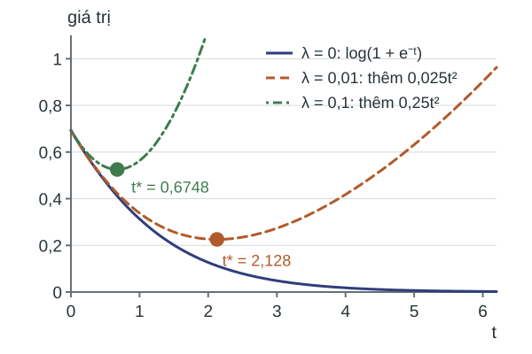
Nhắc lại: (Bài 01) $\nabla^2F_\lambda\succeq\lambda I,$ nên $F_\lambda$ lồi mạnh, có đúng một cực tiểu $w_\lambda.$
Định lý 2. Giả thiết: $F$ là mất mát bình phương hoặc logistic trung bình; $\lambda>0.$
Kết luận: $\lambda w_\lambda=-\nabla F(w_\lambda);$ $\lVert w_\lambda\rVert^2\le2F(0)/\lambda,$ với mất mát logistic ${\lVert w_\lambda\rVert\le\sqrt{2\log2/\lambda}};$ ${\mu=\lambda}.$
Chứng minh. Vì $F\ge0\text{:}$ $\frac\lambda2\lVert w_\lambda\rVert^2\le F_\lambda(w_\lambda)\le F_\lambda(0)=F(0).$
Ý nghĩa: kể cả khi dữ liệu tách được (Định lý 1), $F_\lambda$ có cực tiểu với mọi $\lambda>0.$
Nhu cầu: cận trên $L$ của $\nabla^2F_\lambda$ để có $\kappa=L/\mu.$
Trực quan. Một mẫu $x_1=1,$ $y_1=+1\text{:}$ ${F_\lambda(w)=\log(1+e^{-w})+\frac\lambda2w^2},$ ${F_\lambda''(w)=\sigma(w)\sigma(-w)+\lambda}\in(\lambda,\tfrac14+\lambda].$
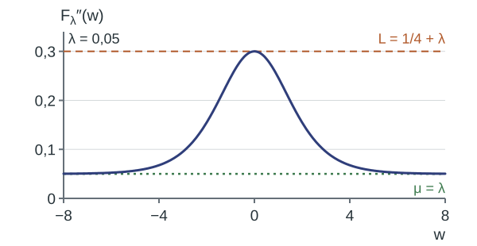
Mệnh đề 4. Mất mát logistic, $\lambda>0\text{:}$ ${\lambda I\preceq\nabla^2F_\lambda(w)\preceq LI}$ với mọi $w,$ trong đó
nên $\kappa=\frac L\mu=1+\frac{\lambda_{\max}(X^TX)}{4n\lambda}.$ Nếu ${\lVert x_i\rVert\le r}$ với mọi $i$ thì ${L\le\frac{r^2}4+\lambda}$ và ${\kappa\le1+\frac{r^2}{4\lambda}}.$
Chứng minh. $0\preceq S\preceq\tfrac14I;$ $\lambda_{\max}(X^TX)\le\operatorname{tr}X^TX=\sum_i\lVert x_i\rVert^2\le nr^2.$
Ba điểm $u=(-1,0,1),$ $y=(-1,+1,-1),$ đặc trưng $(1,u,u^2);$ $\lambda=0$: không có cực tiểu.
Tính $w_\lambda,$ $L$ và cận $\kappa$ với $\lambda=0{,}1;$ $0{,}01.$
$X^TX=\begin{pmatrix}3&0&2\\0&2&0\\2&0&2\end{pmatrix},$ $\lambda_{\max}=\frac{5+\sqrt{17}}2\approx4{,}5616,$ $L=\frac{4{,}5616}{12}+\lambda.$
| $\lambda$ | $w_\lambda$ | $P(y=+1\mid u=-1,0,1)$ | $L$ | $\kappa\le$ |
|---|---|---|---|---|
| $0{,}1$ | $(0{,}1298;\ 0;\ -1{,}4288)$ | $(0{,}214;\ 0{,}532;\ 0{,}214)$ | $0{,}4801$ | $4{,}80$ |
| $0{,}01$ | $(1{,}5571;\ 0;\ -4{,}2452)$ | $(0{,}064;\ 0{,}826;\ 0{,}064)$ | $0{,}3901$ | $39{,}0$ |
Diễn giải: với $\lambda>0$ nghiệm hữu hạn dù dữ liệu tách được; xác suất không tiến về $0$ hoặc $1.$
Câu hỏi:
Lời giải:
Kiểm tra giả thiết ở câu 2: nếu cả bốn biên $\ge0$ thì $w_1\le0$ và $w_1\ge0,$ nên $w_1=0,$ rồi $w_0=0.$
Một mẫu $x_1=1,$ $y_1=+1$ (tách được): $F_\lambda(w)=\log(1+e^{-w})+\frac\lambda2w^2,$ $w_\lambda$ giải $\lambda w=\frac1{1+e^{w}}.$
| $\lambda$ | $0{,}5$ | $0{,}05$ | $0{,}005$ | $0{,}0005$ |
|---|---|---|---|---|
| $w_\lambda$ | $0{,}6748$ | $2{,}1280$ | $3{,}9140$ | $5{,}8342$ |
| $\sigma(w_\lambda)$ | $0{,}663$ | $0{,}894$ | $0{,}980$ | $0{,}997$ |
| $\kappa=1+\frac1{4\lambda}$ | $1{,}5$ | $6$ | $51$ | $501$ |
$\lambda$ giảm: $\sigma(w_\lambda)\to1$ và $w_\lambda$ tăng không bị chặn, như bài toán không chính quy hóa.
Kết luận: trên dữ liệu tách được, $\lambda$ càng nhỏ thì $F(w_\lambda)$ càng gần $\inf F$ và cận $\kappa\le1+\frac{r^2}{4\lambda}$ càng lớn.
Muốn so tổng chi phí của hạ gradient và Newton: số bước theo độ cong nhân chi phí một bước.
Số bước theo $\kappa$ · chi phí một bước · tổng chi phí · ngưỡng hòa vốn · thừa số $n$
Nhu cầu: đếm số phép tính để đạt ${e_k=F_\lambda(w_k)-F_\lambda(w_\lambda)\le\varepsilon};$ tổng chi phí là số bước nhân chi phí một bước.
Nhắc lại: hạ gradient, bước $1/L$ mọi hướng,
Newton chia mỗi hướng cho độ cong của nó,
Trên hình, 12 bước hạ gradient còn ở $(1{,}76;\,1{,}02);$ Newton tới nghiệm sau $1$ bước.
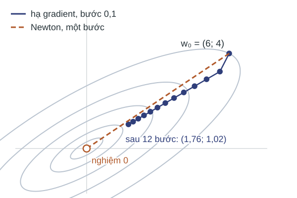
$F_\lambda(w)=\log(1+e^{-w})+\frac\lambda2w^2,$ $\lambda=0{,}005$ $(\kappa=51),$ $w_0=0$ $(e_0=0{,}635).$
Tính số bước để $e_k=F_\lambda(w_k)-F_\lambda(w_\lambda)\le10^{-8}.$
Newton: ${e_k=8{,}3\cdot10^{-2}};$ ${1{,}4\cdot10^{-2}};$ ${1{,}1\cdot10^{-3}};$ ${1{,}1\cdot10^{-5}};$ ${1{,}4\cdot10^{-9}}.$
Hạ gradient: $e_k$ giảm theo tỉ số gần cố định; ${e_{71}=8{,}9\cdot10^{-9}}.$
Newton cần $5$ bước, hạ gradient $71$ bước.
Diễn giải: một bước của hai phương pháp cùng bậc chi phí khi $n=d=1,$ khác bậc khi $n,$ $d$ lớn.
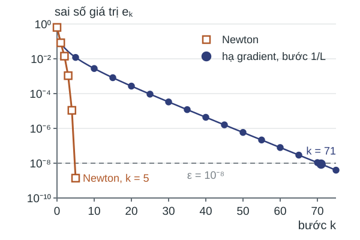
Nhắc lại: hai định lý hội tụ của Bài 04; $e_k=f(w_k)-f^*.$
Định lý 3. $f$ $L$-trơn, $\mu$-lồi mạnh, $\kappa=L/\mu,$ bước $1/L\text{:}$
Định lý 4. $f$ lồi, $\mu I\preceq\nabla^2f\preceq LI,$ Hessian Lipschitz, quay lui Armijo; số bước không vượt
Ý nghĩa: số bước hạ gradient tỉ lệ $\kappa;$ số hạng sau (giai đoạn bậc hai của Newton) không chứa $\kappa.$
Cùng ví dụ một chiều, ba giá trị $\lambda,$ $\varepsilon=10^{-8};$ cột cận theo Định lý 3:
| $\lambda$ | $\kappa$ | $e_0$ | Số bước hạ gradient | Cận $\lceil\kappa\log(e_0/\varepsilon)\rceil$ | Số bước Newton |
|---|---|---|---|---|---|
| $0{,}05$ | $6$ | $0{,}4674$ | $12$ | $106$ | $4$ |
| $0{,}005$ | $51$ | $0{,}6351$ | $71$ | $917$ | $5$ |
| $0{,}0005$ | $501$ | $0{,}6817$ | $446$ | $9037$ | $7$ |
Nhu cầu: mỗi bước Newton cần $\nabla^2F_\lambda$ và giải hệ $d\times d;$ cần đếm chi phí đó.
| Phép tính, $n=10^5,$ $d=10^3$ | Hạ gradient | Newton |
|---|---|---|
| $z=Xw$ | $nd=10^8$ | $nd=10^8$ |
| $r_i,$ $S_{ii}$ từ $z_i$ | $O(n)$ | $O(n)$ |
| $g=\frac1nX^Tr+\lambda w$ | $nd=10^8$ | $nd=10^8$ |
| $H=\frac1nX^TSX+\lambda I$ | không | $nd^2=10^{11}$ |
| giải $Hp=-g$ (Cholesky) | không | $d^3=10^9$ |
| cập nhật; quay lui | $O(d)$ | $Xp$: $nd;$ mỗi lần thử $O(n)$ |
Mệnh đề 5. Giả thiết: $X\in\mathbb R^{n\times d}$ dày đặc (dense), $n\ge d;$ đếm phép nhân–cộng, bỏ hằng số.
Kết luận: một bước hạ gradient tốn thời gian $O(nd),$ bộ nhớ thêm $O(n+d);$
một bước Newton tốn thời gian $O(nd^2+d^3),$ bộ nhớ thêm $O(d^2+n).$
Chứng minh. Cộng các dòng của bảng phép tính; bộ nhớ gồm $z,r\in\mathbb R^n,$ $g\in\mathbb R^d$ và, với Newton, $H.$
Nhu cầu: tính bước Newton ở chế độ $d\ge n$ của mạch hồi quy nhiều chiều, nơi $nd^2+d^3$ rất lớn.
Nhận xét ($d>n$). $H=\lambda I+\tfrac1nX^TSX,$ phần thứ hai có hạng $\le n.$ Giải $Hp=-g$ qua một hệ $n\times n$ tốn $O(n^2d+n^3).$
Công thức chung cho một bước Newton: $O\bigl(nd\min(n,d)+\min(n,d)^3\bigr).$
Tổng chi phí $\approx$ chi phí một bước $\times$ số bước; $C_{\rm HG}$ cho hạ gradient, $C_{\rm N}$ cho Newton với $N_{\rm N}$ bước:
Một bước Newton đắt gấp $d+\frac{d^2}n$ lần; Newton rẻ hơn khi $\kappa\log\frac{e_0}\varepsilon>N_{\rm N}\bigl(d+\frac{d^2}n\bigr).$
Ví dụ. $n=10^5,$ $d=10^3,$ $e_0/\varepsilon=10^8,$ $N_{\rm N}=10\text{:}$ ${C_{\rm N}\approx1{,}01\cdot10^{12}},$ ${C_{\rm HG}\approx1{,}84\cdot10^9\,\kappa}.$
Hòa vốn khi $\kappa$ có bậc vài trăm: $548$ khi bỏ hằng số.
Cùng $n,$ $d,$ $e_0/\varepsilon,$ $N_{\rm N}$ như trên; $\lVert x_i\rVert^2\le2$ nên $\kappa\le1+\frac1{2\lambda}.$
| $\lambda$ | Cận $\kappa$ | Cận $C_{\rm HG}$ | So với $C_{\rm N}$ |
|---|---|---|---|
| $10^{-3}$ | $501$ | $9{,}2\cdot10^{11}$ | cùng bậc |
| $10^{-5}$ | $50\,001$ | $9{,}2\cdot10^{13}$ | gấp khoảng $90$ lần |
Kết luận: theo cận, Newton có lợi khi $\lambda=10^{-5};$ khi $\lambda=10^{-3}$ phép đếm không phân định.
| $(n,d)$ | $nd$ | $nd^2$ | $d^3$ | Hessian, $8d^2$ byte | $d+d^2/n$ |
|---|---|---|---|---|---|
| $(10^3,\,10^2)$ | $10^5$ | $10^7$ | $10^6$ | 80 kB | $110$ |
| $(10^5,\,10^3)$ | $10^8$ | $10^{11}$ | $10^9$ | 8 MB | $1010$ |
| RCV1 $(781\,265;\ 47\,152)$ | ${3{,}68\cdot10^{10}}$ | ${1{,}74\cdot10^{15}}$ | ${1{,}05\cdot10^{14}}$ | 17,8 GB | ${\approx5{,}0\cdot10^4}$ |
Câu hỏi:
Lời giải:
Ngân sách $10^{12}$ phép nhân–cộng, bỏ hằng số:
Mọi bước của hai phương pháp đều có thừa số $n.$
Với ngân sách tính toán cố định, số lần cập nhật giảm theo $1/n.$
Muốn xác định độ chính xác tối ưu khi đích là sai số trên dữ liệu mới, và hai giới hạn của khung tất định.
Độ chính xác tối ưu · dừng sớm · thừa số $n$ · đặc trưng cố định
Nhu cầu: xác định độ chính xác tối ưu cần thiết khi đích là $R$ nhỏ.
| $k$ | $0$ | $10$ | $50$ | $79$ | $200$ | $1000$ | $k\to\infty$ |
|---|---|---|---|---|---|---|---|
| MSE xác thực | $0{,}3125$ | $0{,}0107$ | $0{,}00200$ | $0{,}00108$ | $0{,}00487$ | $0{,}0341$ | $0{,}0487$ |
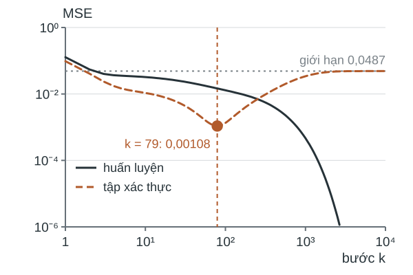
Trực quan. Hạ gradient khớp nhanh hướng có độ cong lớn, rất chậm hướng gần phẳng.
Trên năm mẫu ($\kappa=553{,}7$), phần khớp muộn làm sai số xác thực tăng.
Định nghĩa. Dừng sớm (early stopping):
Lưu ý: báo cáo $R$ trên tập kiểm thử.
(i) Chi phí: chi phí mỗi bước chứa thừa số $n;$ ngân sách cố định: số bước $\propto1/n.$
(ii) Biểu diễn: với $\varphi$ cố định, $\varphi(u)^Tw$ có thể không biểu diễn được quan hệ cần học.
Mọi đơn thức bậc $\le q$ của $d_0$ biến: $d=\binom{d_0+q}q;$ nguy cơ quá khớp, bước Newton $O(nd^2+d^3).$
Nhu cầu: bước có chi phí không phụ thuộc $n;$ đặc trưng học được.
Nhu cầu: đối chiếu kết quả của bài với ba mục tiêu và các giả thiết không được bỏ.
Bảng tổng kết · bài tập chuyển giao · tài liệu đọc
| Kết quả | Giả thiết không được bỏ | Công thức |
|---|---|---|
| Số điều kiện (định lý xen kẽ Cauchy) | đặc trưng lồng nhau | $\kappa(X^TX)$ không giảm theo $d$ |
| Chế độ nội suy (Mệnh đề 1) | mất mát bình phương, $\operatorname{rank}X=n$ | $\min F=0;$ nghiệm $w_0+\ker X$ |
| Không tồn tại cực tiểu (Định lý 1) | mất mát logistic, dữ liệu tách được | $\inf F=0$ không đạt; $F(w_k)\to0\Rightarrow\lVert w_k\rVert\to\infty$ |
| Lồi mạnh (Định lý 2, Mệnh đề 4) | $\lambda>0;$ với $\kappa$: mất mát logistic, $\lVert x_i\rVert\le r$ | $\mu=\lambda;$ $\kappa\le1+\frac{r^2}{4\lambda}$ |
| Kết quả | Giả thiết không được bỏ | Công thức |
|---|---|---|
| Số bước hạ gradient (Định lý 3) | $L$-trơn, $\mu$-lồi mạnh; bước $1/L$ | $\kappa\log\frac{e_0}\varepsilon$ |
| Số bước Newton (Định lý 4) | Hessian Lipschitz; quay lui Armijo | $\frac{f(w_0)-f^*}\gamma+\log_2\log_2\frac{\varepsilon_0}\varepsilon$ |
| Chi phí một bước (Mệnh đề 5) | $X$ dày đặc, $n\ge d$ | $O(nd);$ $O(nd^2+d^3)$ |
| Chọn mô hình, dừng sớm | tập chọn tách khỏi tập báo cáo | $d,$ $\lambda,$ bước dừng theo sai số xác thực |
Câu hỏi:
Phân loại hai lớp, $n=200$ mẫu, $d=500$ đặc trưng đa thức.
Lời giải:
Tài liệu đọc: Goodfellow, Bengio và Courville (2016), §5.2, §7.1, §7.3, §7.8, §8.1.
Boyd và Vandenberghe (2004), §6.3.2, §7.1.1, §9.3, §9.5, §9.7.
Sra, Nowozin và Wright (2011), ch. 13.
Câu hỏi: